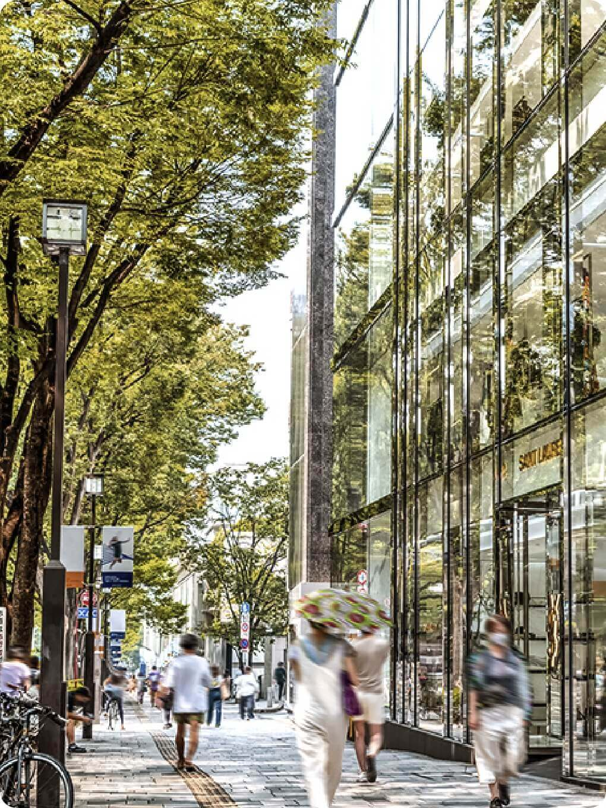
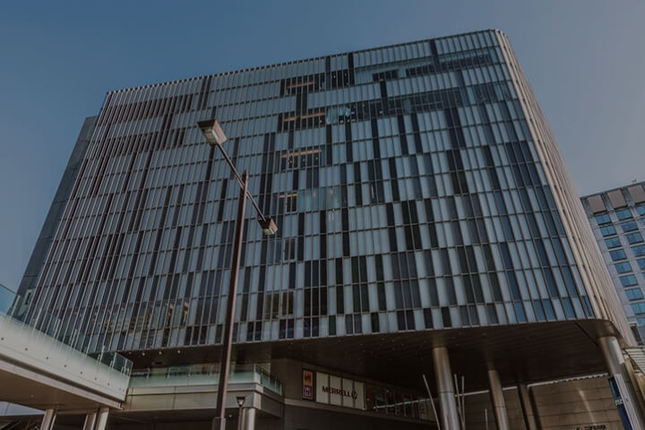
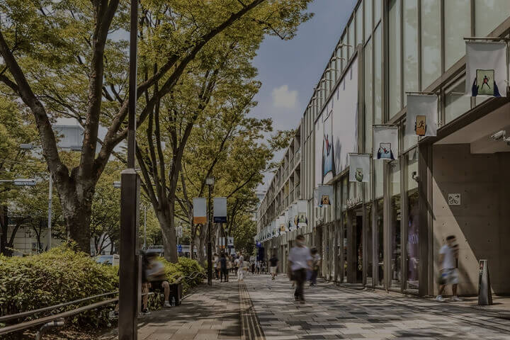
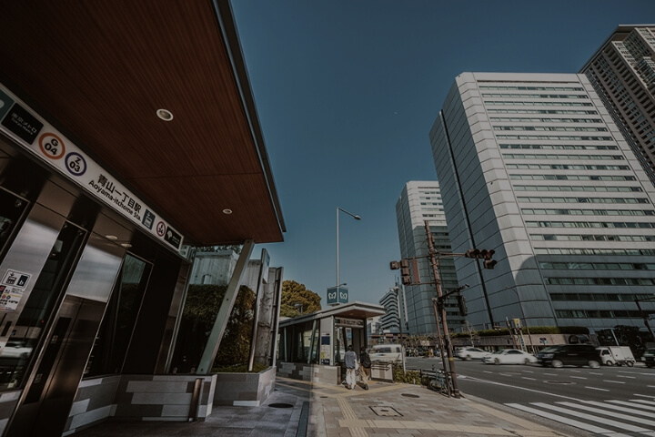
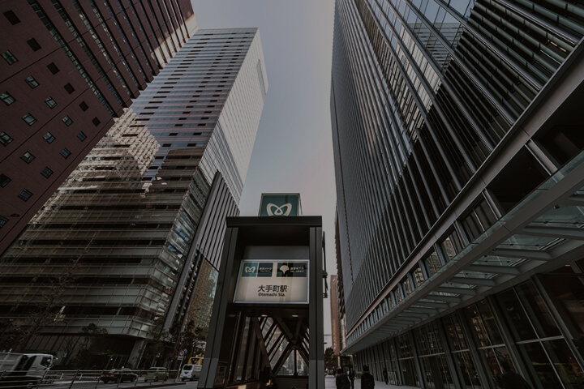
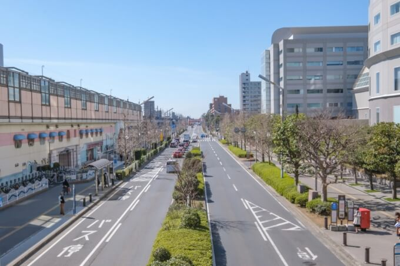

営業時間／10:00～18:00
（火・水曜定休(祝日除く)、年末年始は休業）
Accessアクセス
image photo「桜新町」駅徒歩9分
渋谷、大手町まで
ダイレクトアクセス。

Direct Access
ダイレクトアクセス
東急田園都市線・
半蔵門線で都心の
ターミナル駅へ直通。
都市生活のフットワークが
広がります。
最寄りの田園都市線
「桜新町」駅（徒歩9分）から、
都内有数のターミナル「渋谷」駅まで
4駅11分（10分）という
快適な利便性。
半蔵門線に乗り入れ、
都心の主要駅にも
ダイレクトにアクセスできます。
路線図
東急田園都市線
「桜新町」駅（徒歩9分）より

「二子玉川」
駅まで
直通
5
分 (4分)
「三軒茶屋」
駅まで
直通
5
分 (4分)
「渋谷」
駅まで
直通
11
分 (10分)

東京メトロ半蔵門線
「表参道」
駅まで
直通
14
分 (12分)

東京メトロ半蔵門線
「青山一丁目」
駅まで
直通
17
分 (15分)

東京メトロ半蔵門線
「大手町」
駅まで
直通
30
分 (27分)
※掲載の路線図は、一部路線・駅等を抜粋して表記しています。
Taxi
タクシー
image photo
ランチやディナー、
ショッピングに
タクシー移動も手軽。
日中も深夜も気軽に
タクシーを利用できるのが魅力。
荷物が増えるショッピング帰りにも、
出張などのビジネスシーンにも
便利に活用できます。
現地までのタクシー料金
シミュレーション（概算）
-
「二子玉川」
駅(西口)から
日中 1,700円 / 深夜 2,000円 -
「自由が丘」
駅(正面改札)から
日中 2,300円 / 深夜 2,800円 -
「渋谷」
駅(ハチ公口)から
日中 2,900円 / 深夜 3,400円
※タクシー料金は、初乗り500円の普通車（中型車）を日中時（深夜時は22時～5時）に一般道で利用した場合の参考例です。タクシー会社・走行ルートおよび交通状況によって料金は異なります。
※タクシーサイトより（2024年2月調べ）
Car Access
タクシー
ビジネスに、レジャーに、
スムーズに移動できる
軽快なアクセス環境。
首都高速道路
「三軒茶屋」出入口に近く、
羽田空港や成田空港までの
車移動もスムーズ。
レジャースポットへの
アクセスも良く、
快適なドライブが可能です。
シティハウス弦巻より 首都高速道路高速3号渋谷線
「三軒茶屋」出入口 まで
約3.2km
「用賀」出入口 まで
約3.2km
image photo
海外出張や旅行、レジャー
も快適なアクセス環境
首都高速道路「三軒茶屋」入口より
 image photo
image photo
空港中央出口
約
17
分
(約17.9㎞)

image photo
浦安出口
約
23
分
(約26.1㎞)
image photo
成田IC
約
57
分
(約77.4㎞)
※掲載の距離表示については地図上の概測距離を、高速道路は「ドラぷら（NEXCO東日本）」ホームページにて検索（2024年2月現在）したものです。但し、天候不順、周辺の交通状況（朝・夕の混雑、交通事項等）により大幅な遅延が生じる場合があります。
※掲載の所要時間は待ち時間・乗り換え時間を含んだ通勤時(カッコ内は平常時)の目安であり、時間帯により多少異なります。
※距離表示については地図上の概測距離を、徒歩分数表示については80ｍを1分として算出し、端数を切り上げたものです。
※掲載の情報は2024年5月現在のものです。
※距離表示については地図上の概測距離を、徒歩分数表示については80ｍを1分として算出し、端数を切り上げたものです。
※掲載の情報は2024年5月現在のものです。